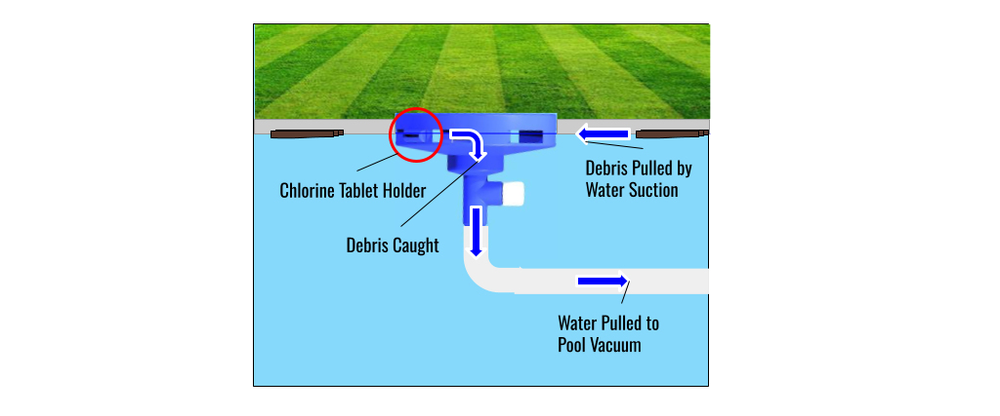
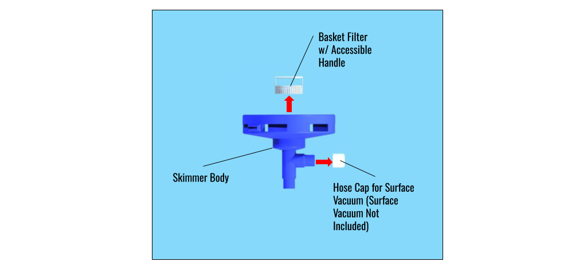

Our Products
Our Product Line
Explore our range of pool maintenance products designed to meet your needs.
PoolBoy
Pool Skimmers are essential for maintaining a clean and debris-free swimming pool. Leaves falling into your pool this season? Disgusted by all the dirt and grime that floats on the surface and interrupts your otherwise smooth, cool, crystal blue pool? Here at SkimSmart Technologies, we couldn’t think of anything that irked us more than these things. So, we designed the phenomenal new PoolBoy, a perfect answer to the question of keeping your pool surface looking pristine.
How Does It Work?
The unique, intuitive, and easy-to-use design of PoolBoy allows for a stress-free and inexpensive option to keep your pool surface glimmering. The PoolBoy has just 3 simple parts:
- Skimmer Body
- Filter Basket
- Hose Cap
It’s just that simple! By connecting your pool vacuum hose to the Skimmer Body through a custom port designed to fit common 1.25 to 1.5 inch hoses, then inserting the Skimmer Basket into the Skimmer Body, you’re ready to toss it into the pool, turn the vacuum on, and watch your pool become crystal-clear!
Using an innovative, conical design, the PoolBoy works to float on top of your pool through a combination of lightweight, plastic material and buoyant design. In fact, it’s designed to sit almost level with the top of your pool, keeping it from being an eyesore! Underneath the water, though, the PoolBoy is actively working to pull in and trap debris clogging your pool. As water is sucked in through the hose connected at the bottom of your PoolBoy, water from the top of the pool is pulled into the Skimmer Body of your PoolBoy, actively drawing in and trapping debris for easy removal.

Additionally, the Filter Basket within the Skimmer Body even gets small, easy to miss dirt and debris! Once you’re done cleaning, all you have to do is remove it, empty and clean it, and you’ve got a clean new pool!

Additional Features
If you’re looking to clean the bottom of your pool as well, PoolBoy can do it too! Just attach your pool vacuum head (not included) to your vacuum hose (not included) to the side port on our skimmer, and you can now clean the bottom and top of your pool at the same time!
Need to also add more chlorine to your pool? Simply take a chlorine tablet (not included) and slide it into our custom chlorine tablet holder! Then, just toss your PoolBoy into the pool.
Dimensions and Cost
- Skimmer Body Dimensions:
- Outer Diameter of 10 inches, 7.95 inches tall.
- 3D printed out of pool-safe ASA material ($0.86 per cubic inch).
- Cost to manufacture: $17.36
- Retail Price:
- Amazon Store: $23.99
- Retail Locations: $21.99
Where Can Our Product Be Found?
PoolBoy and other SkimSmart Technologies products can be found on Amazon and in your local retail sporting goods or home improvement store, including, but not limited to:
- Lowes
- Home Depot
- Dicks’ Sporting Goods
- Academy Sports + Outdoors
- Walmart
- Ace Hardware
- Menard’s
- Tractor Supply and Co.